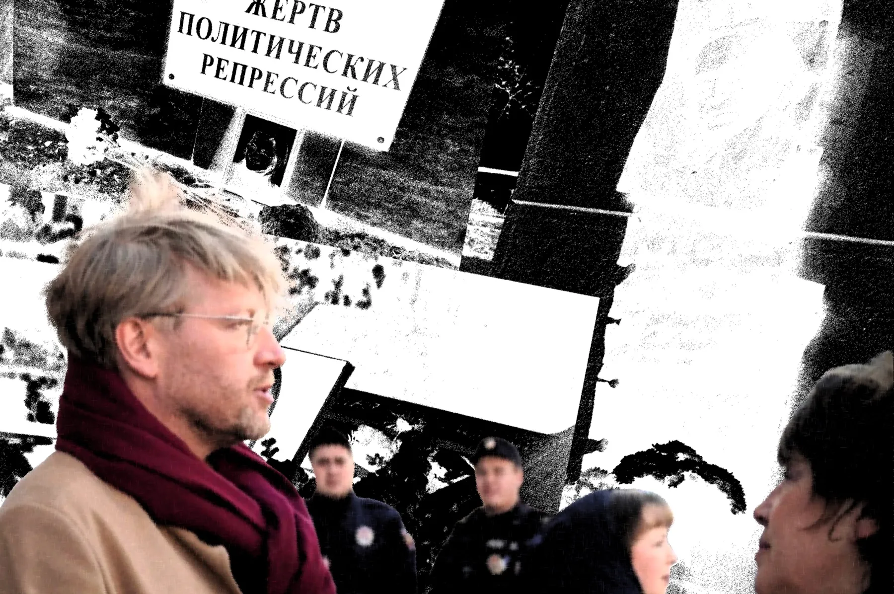
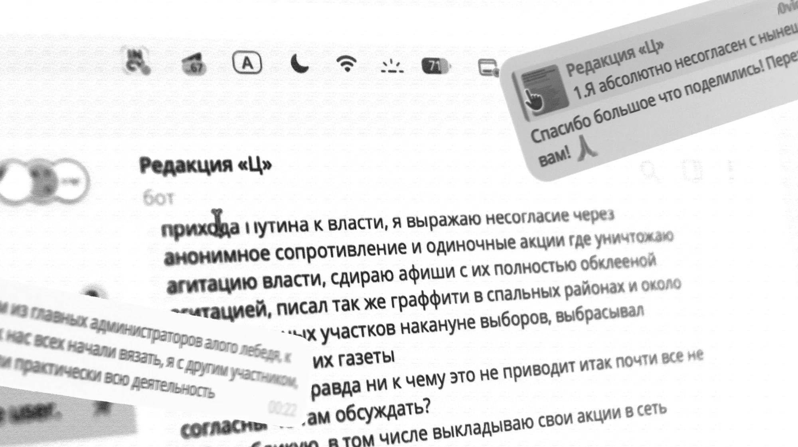
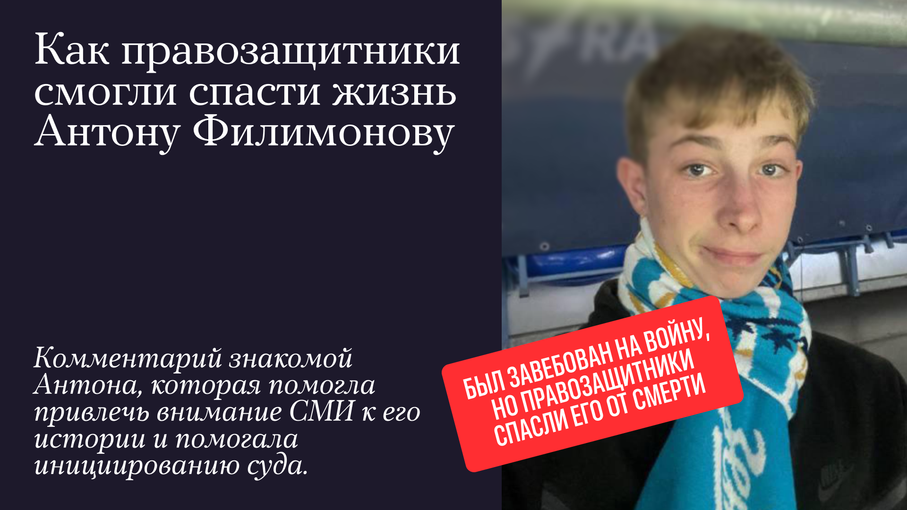

Работа редакции
Подготовка текстов, редактура, проверка фактов, работа сайта и каналов проекта.
Независимое медиа. С вашей поддержкой.
«Центр Ц.» - идейный проект. Мы не просим донатить из обязанности: если вам близка наша работа, поддержка поможет нам продолжать говорить о важном.
Без инвесторов и государственных грантов.
Только мы и наши читатели.
Ваша поддержка
У нас нет инвесторов и государственных грантов, только читатели, которым важна независимая редакция.
Донаты помогают нам планировать работу и выпускать материалы, которые требуют времени, внимания и независимости.
Подготовка текстов, редактура, проверка фактов, работа сайта и каналов проекта.
Разговоры с правозащитниками и героями, чьи истории важно услышать и сохранить.
Понятные материалы о выборах, правах и о том, как защитить свой голос.
Что мы уже сделали
Репортажи, интервью и «Сохранить голос»: работы, которые уже доступны читателям, и результаты помощи во время выборов.

Репортаж · 7 октября 2026
Собрали хронику памятных акций в пяти городах России. Сами побывали у московского мемориала и опубликовали фотографии и наблюдения редакции.
Читать репортаж
Материал · 26 сентября 2026
Разобрали истории молодёжных инициатив и собрали рассказы читателей о политическом несогласии: в публичных акциях, разговорах с близкими и повседневной жизни.
Читать материалСпецпроект · Выборы 2026
Запустили сайт и Telegram-канал о выборах. Добавили интерактивное сравнение официальных итогов и альтернативного подсчёта по стране и отдельным округам.
Перейти в канал проекта
Видео · Интервью
Выпустили интервью о том, как правозащитники помогли Антону Филимонову. Рассказали о его истории и работе людей, которые добивались помощи.
Смотреть интервьюМы ценим ваше доверие и открыто рассказываем, как устроена поддержка «Центра Ц.».
На работу редакции: подготовку материалов, оплату сервисов, развитие сайта и Telegram-канала, а также на новые специальные проекты. Ваша поддержка даёт нам возможность планировать работу и оставаться независимыми.
Любую комфортную для вас. Разовый донат помогает уже сегодня, а регулярный делает работу редакции устойчивее. Главное для нас — ваше участие и доверие.
Нет. Мы не являемся иноагентами и не имеем никакого другого «токсичного» статуса.
Возможность скрыть имя и состав передаваемых данных зависят от выбранного платёжного сервиса. Перед переводом проверьте его настройки приватности и условия обработки данных.
Быть на стороне независимости
Любая комфортная для вас сумма помогает редакции работать дальше.
Поддержать «Центр Ц.»